How I Work as a Presentation Designer
Discovery Call with the Speaker
Every project begins with a conversation, not a template. Before opening any design software, I schedule a call directly with the speaker to understand who they are, what they're trying to communicate, and how they want to be perceived on stage.
During this call, I focus on:
- Understanding the general vibe — is the tone corporate and authoritative, energetic and inspiring, casual and conversational, or something in between?
- Identifying the narrative accents — which moments in the talk matter most? Where should the audience's attention peak, and where can the pacing relax?
- Clarifying context and audience — who is in the room, what do they already know, and what does the speaker want them to walk away remembering?
This step ensures the presentation is built around the speaker's voice and intent from the very first slide.
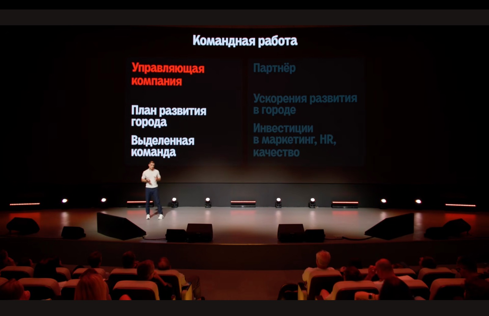
Structure & Graphic Style Drafts
With a clear sense of the message, I move to building the narrative architecture of the deck — the logical flow of ideas, the sequencing of arguments, and the placement of key moments identified during the call. This is a content-first stage: the goal is to make sure the story holds together before any visual decisions are made.
In parallel with — or immediately following — the structural work, I develop visual style directions: color palette, typography, layout language, and overall aesthetic. These drafts translate the "vibe" from the discovery call into a concrete visual identity for the deck.
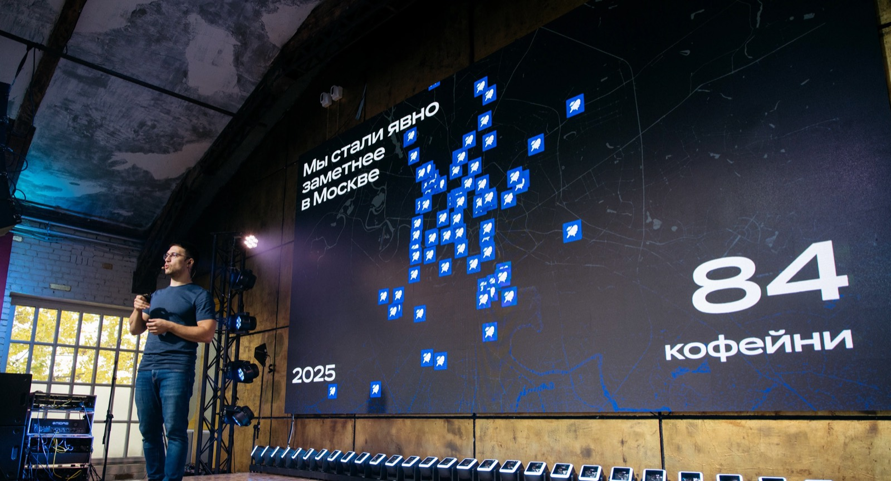
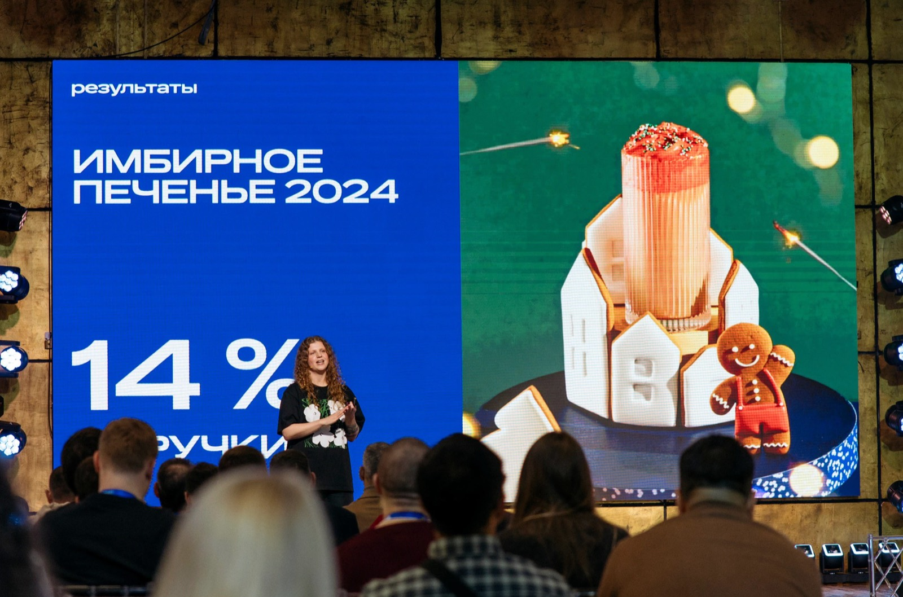
Review and Approval
Once both the structure and the graphic style are ready, I present them together for review. This is a collaborative checkpoint: slide order, content flow, and visual direction are discussed and refined until the speaker is fully aligned with the direction. Only after this approval do I proceed to final execution.
Animation
The last stage is animation — and it's treated as a storytelling tool, not decoration. Motion is used to support the natural rhythm of the speech: reinforcing transitions, building anticipation, and drawing the audience's eye to key moments exactly when the speaker delivers them. Well-placed animation keeps attention on the message at the moments that matter most, making the presentation more engaging and memorable for the audience.
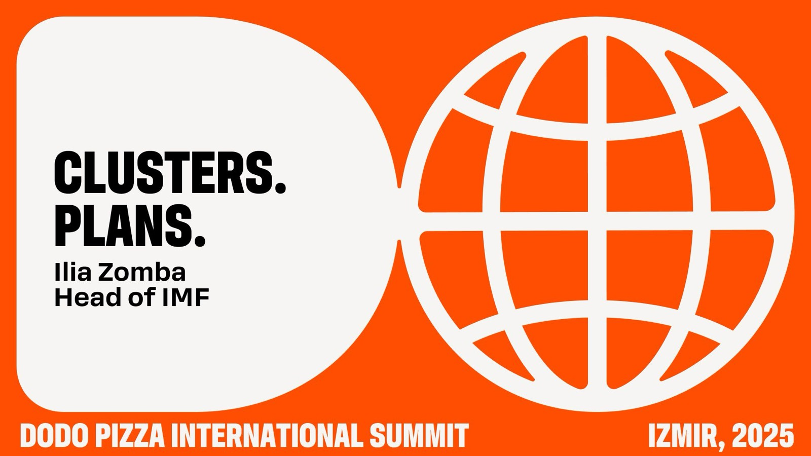
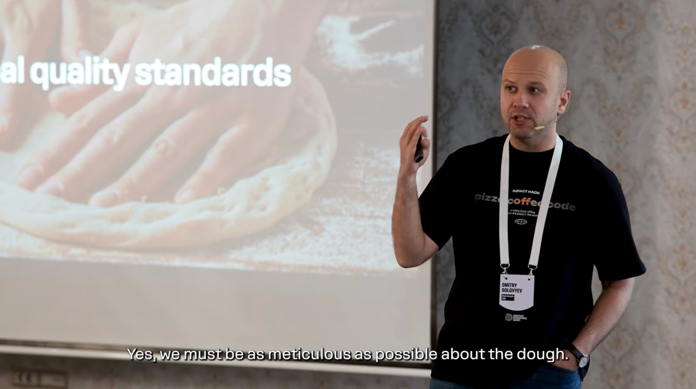
Pitch Presentation for Alfa Bank
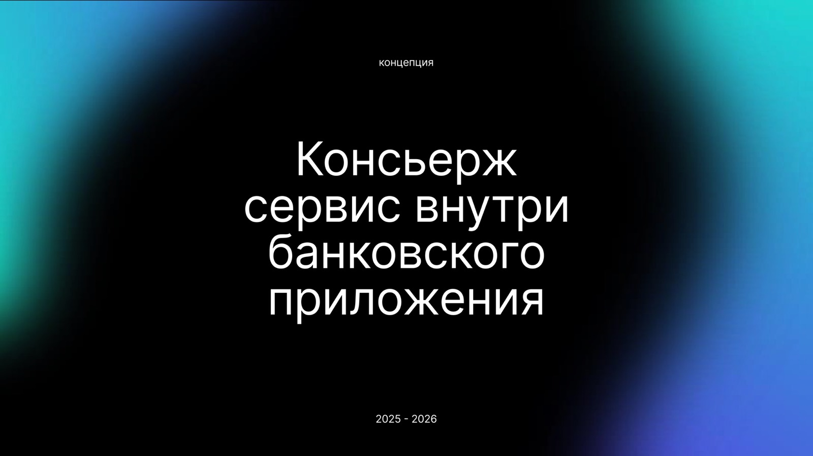
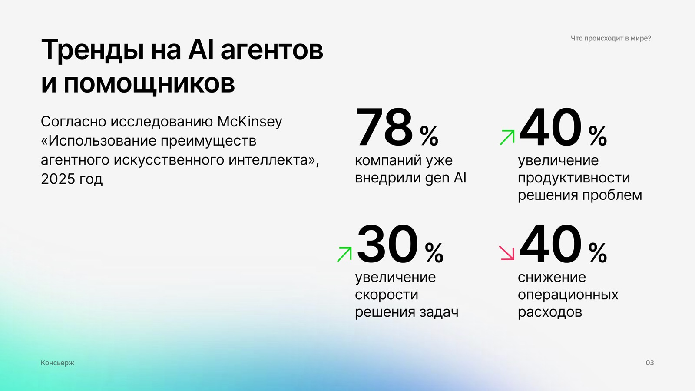
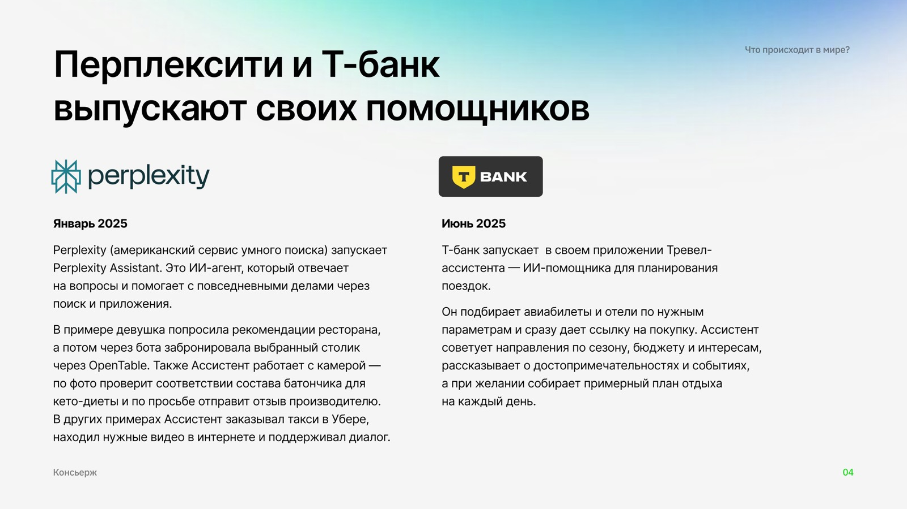
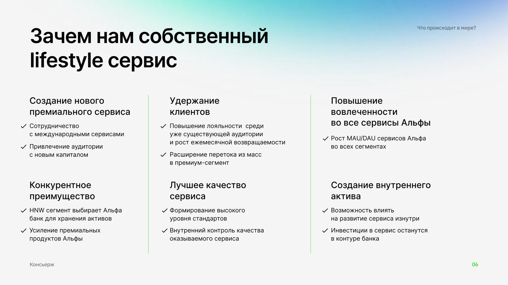
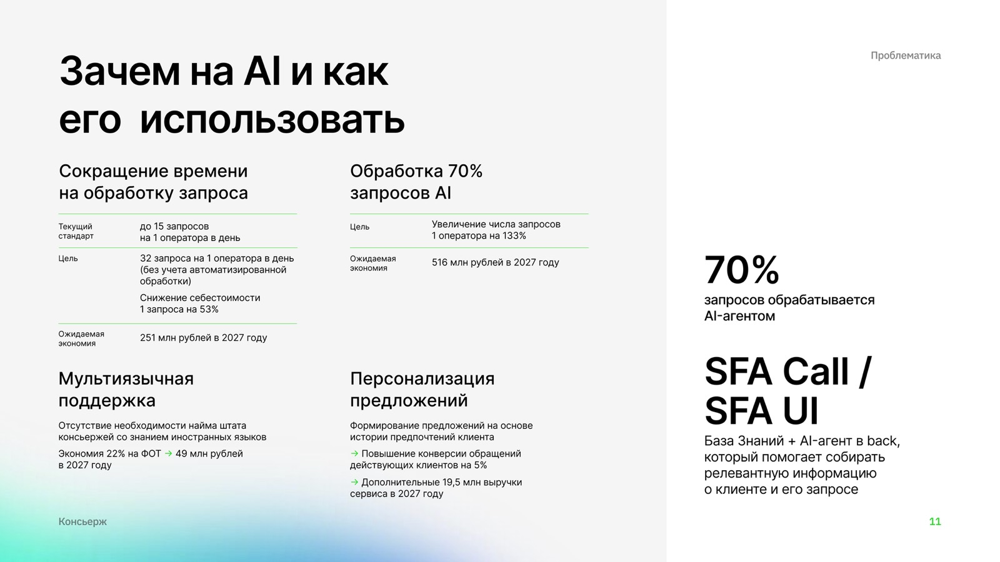
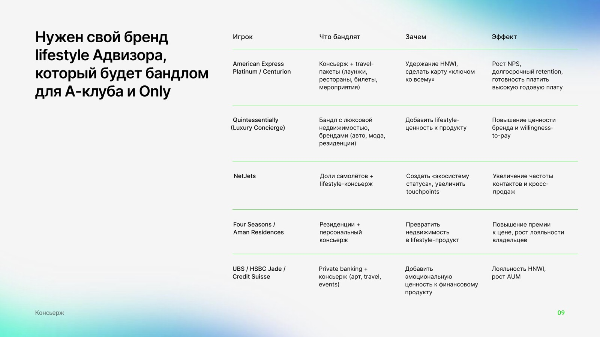
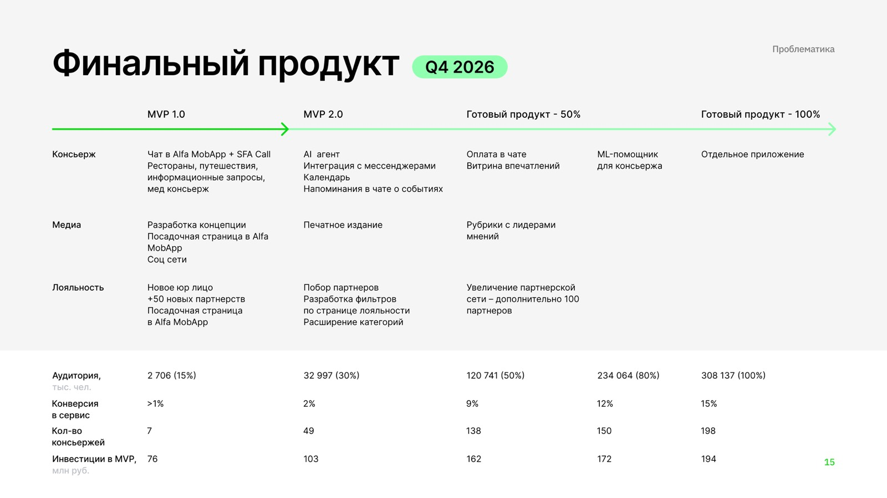